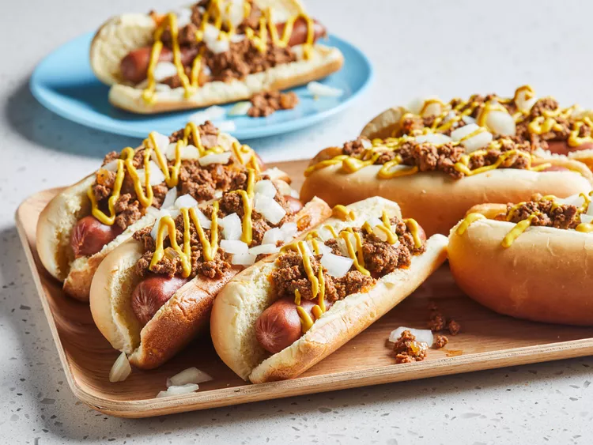

コニーアイランドホットドッグ

概要
コニーアイランドホットドッグは、アメリカのミシガン州デトロイトを中心に親しまれている、ピリ辛の肉ソースをかけたホットドッグです。
ギリシャやマケドニアからの移民が持ち込んだ伝統的なレシピが起源とされています。
デトロイトの「アメリカン・コニーアイランド」と「ラファイエット・コニーアイランド」は、長年にわたるライバル関係で知られています。
材料
- 1.5ポンド(約680g)の挽き肉(牛肉)
- 2カップの水(必要に応じて調整)
- 1/2カップの玉ねぎ(みじん切り)
- 1/3カップのケチャップ
- 大さじ2のバター
- 2片のにんにく(みじん切り)
- 大さじ2のチリパウダー
- 小さじ1.5の塩
- 小さじ1の黒胡椒
- 小さじ1のクミン
- 小さじ1/2のセロリソルト
- ひとつまみのカイエンペッパー
- 8本の牛肉製ホットドッグ
- 8個のホットドッグ用バン
- 1/4カップのマスタード(お好みで調整)
作り方
- 大きな鍋に挽き肉、水、玉ねぎ(1/2カップ)、ケチャップ、バター、にんにく、チリパウダー、塩、黒胡椒、クミン、セロリソルト、カイエンペッパーを入れ、中火で10分ほど混ぜながら加熱します。
- 混合物が泡立ち始めたら、弱火にして1時間ほど煮込み、ソースが濃くなるまで煮詰めます。塩と胡椒で味を調整します。
- 別の鍋でお湯を沸騰させ、ホットドッグを5〜7分間加熱します。
- オーブンを175℃に予熱し、ホットドッグバンを2〜3分間温めます。
- バンにホットドッグを挟み、上からソースをかけ、マスタードとみじん切りの玉ねぎをトッピングします。
- お好みで追加のマスタードや玉ねぎを加えて、召し上がれ！
Home